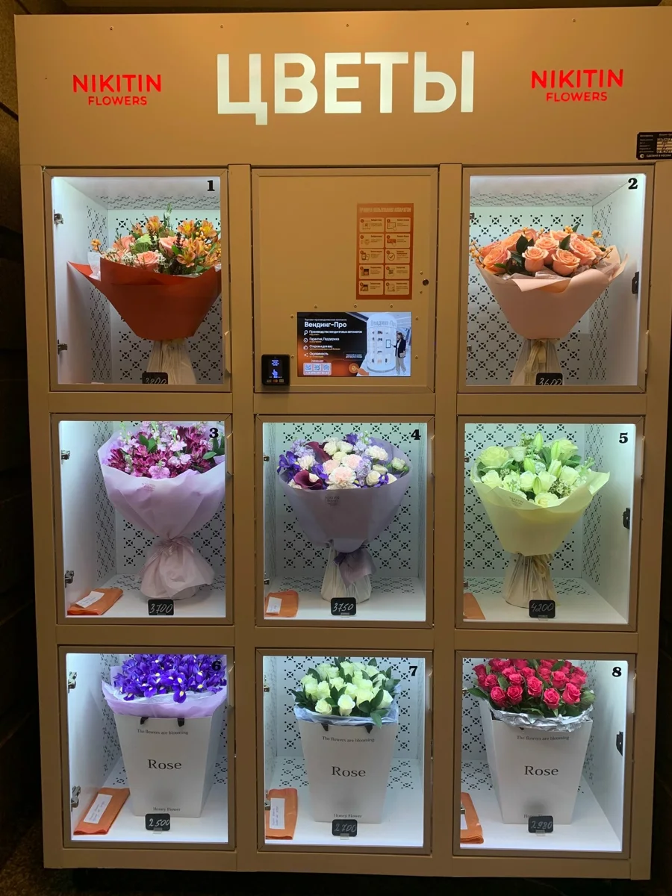
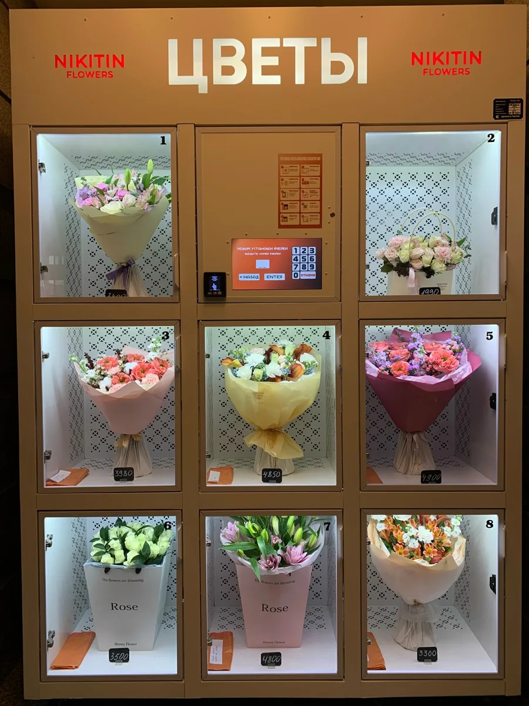
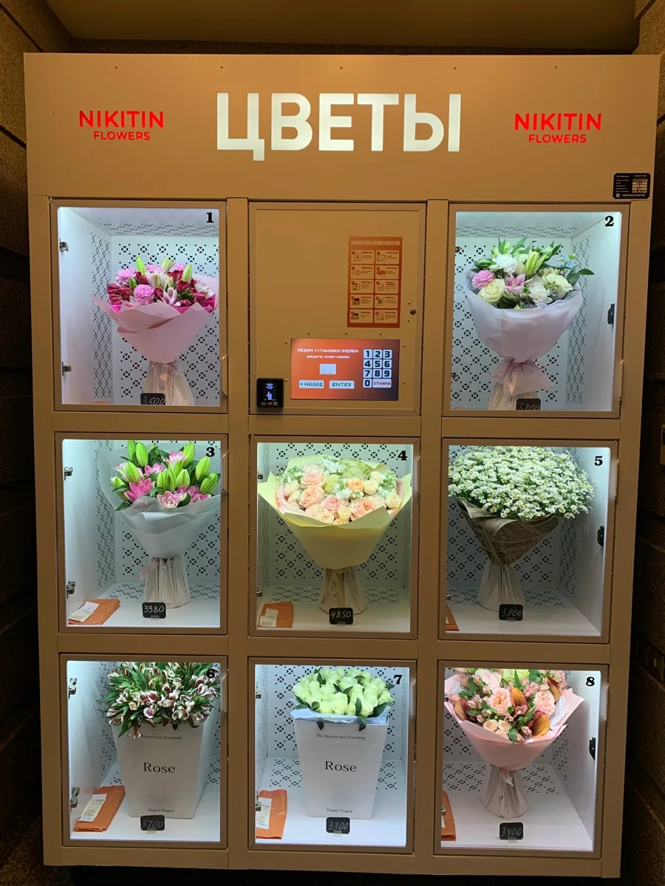
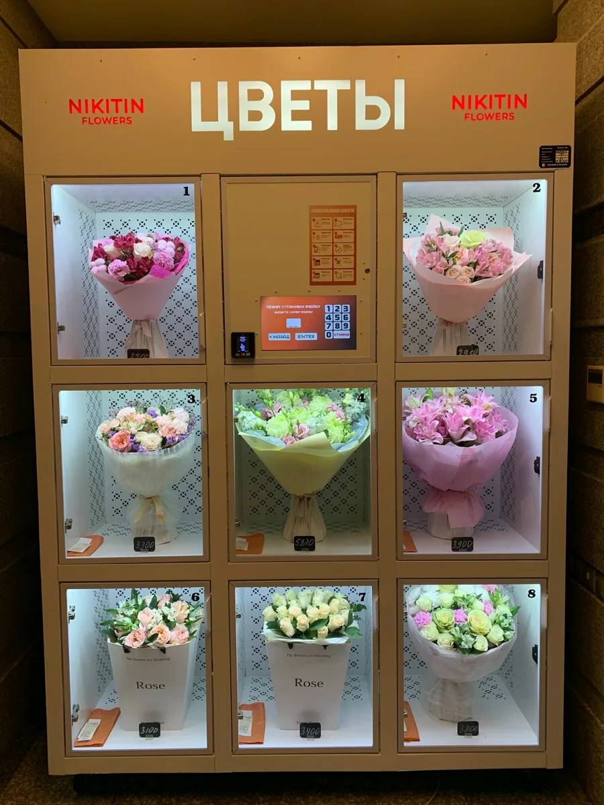
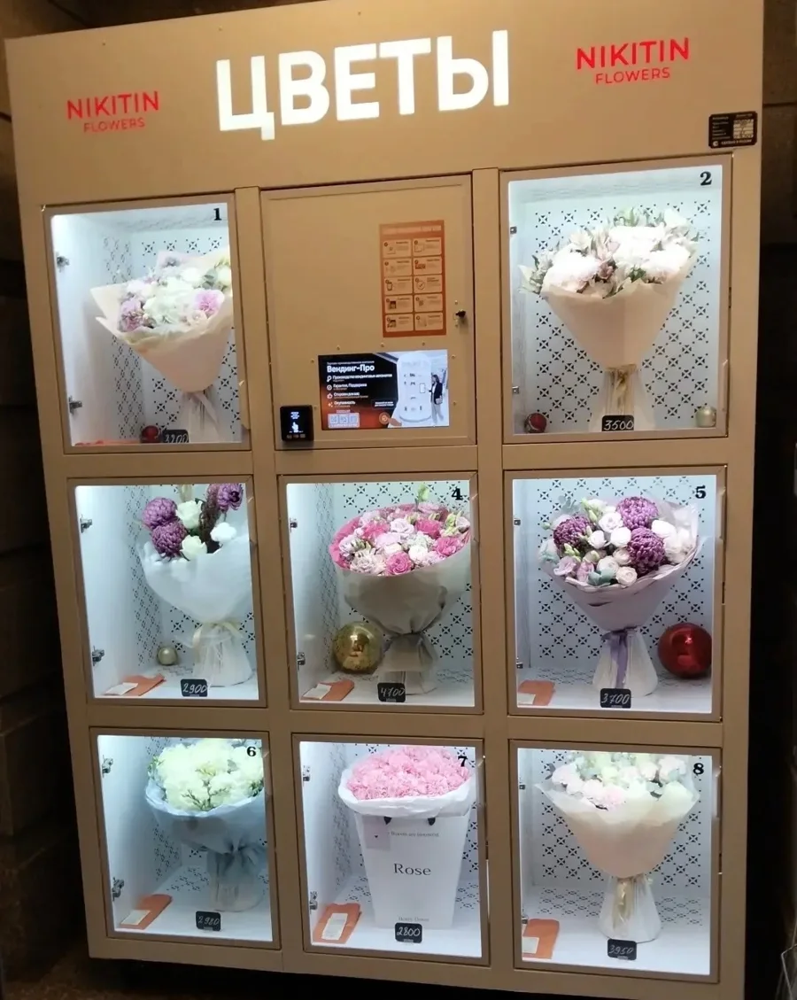
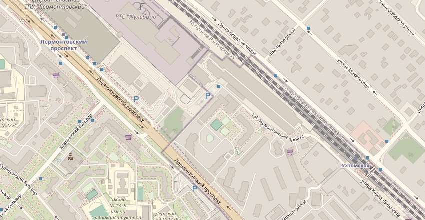

Цветы
в Люберцах
круглосуточно
Цветомат NIKITIN FLOWERS на Октябрьском проспекте, 1. Выбираете букет в окошке, платите картой, дверца открывается. Ночью тоже.
- выберите ячейку
- оплатите картой
- заберите букет
Нажмите на ячейку
Букеты с витрины
Витрина меняется два раза в неделю. Этих букетов уже может не быть: позвоните, и соберём похожий.
Витрина по дням
Так цветомат выглядел в разные дни. Свежие фото витрины с ценами публикуем в группе.





Как купить
Выберите букет в окошке
Оплатите картой на экране
Дверца откроется, букет ваш
Хотите конкретный букет или к определённому времени? Позвоните заранее
Заказ к дате
К Новому году собираем композиции и ёлочки из датской сосны — нобилиса. Для других поводов подберём букет вместе с вами.
О нас
«Мы убрали из процесса покупки цветов всё лишнее, оставив только эмоцию»
Для нас цветы — радость в моменте. Для признания, примирения или встречи, которую хочется запомнить. Поэтому любимый букет можно выбрать по дороге, в любое время.
Где найти
Люберцы, Октябрьский проспект, 1БЦ «Лермонтовский»

© участники OpenStreetMapЧастые вопросы
Как оплатить букет?
Выберите номер ячейки на экране и приложите банковскую карту к терминалу. После оплаты дверца откроется.
Есть ли доставка?
Доставки нет. Готовый букет можно забрать из цветомата. Как получить композицию к дате, можно уточнить по телефону.
Как часто меняется витрина?
Мы полностью обновляем витрину два раза в неделю. Свежие фотографии и цены публикуем в группе VK.
Можно ли отложить букет?
Позвоните и назовите букет или номер ячейки. Мы проверим наличие и подскажем, можно ли его отложить.
Можно ли заказать композицию к дате?
Да. Оставьте заявку или позвоните, чтобы обсудить цветы, бюджет и время. К Новому году принимаем заказы на композиции и ёлочки из нобилиса.
Что делать, если нужного букета уже нет?
Выберите в каталоге букет, который вам понравился, и нажмите «Заказать похожий». Мы свяжемся с вами и обсудим состав.
Заказать букет или композицию к дате
Расскажите, какие цветы вам нужны и когда вы хотите их забрать. Детали согласуем по телефону.
+7 964 566-79-74